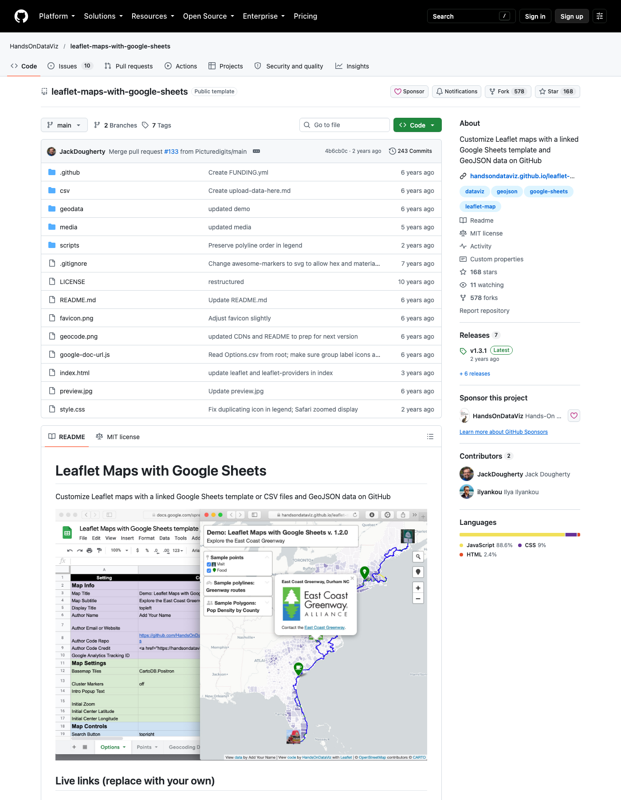

線上交流會 · 90 分鐘
公民組織的 GitHub
資源搜索與選擇指南
不寫程式，也能找到、判斷、下載與分享好用的開源資源
講師：黃瀚霆 · ＿＿＿＿（10月12日） ·
課程流程
今天的 90 分鐘
| 時間 | 單元 | 形式 |
|---|---|---|
| 00–05 | 開場：AI 時代，為什麼Github 那麼重要 | 講述 |
| 05–20 | 一、GitHub 觀念與基本術語 | 講述＋比喻 |
| 20–35 | 二、導覽 GitHub 平台介面 | 螢幕示範 |
| 35–50 | 三、導覽 Repository 頁面 | 示範＋檢查表 |
| 50–75 | 四、搜尋、下載、上傳練習 | 實作 |
| 75–85 | 五、如何找資源：語法、清單與 AI | 示範＋實作 |
| 85–90 | 歸納重點與 Q&A | 交流 |
公民組織的 GitHub 資源搜索與選擇指南 · 2
講師介紹
黃瀚霆 Bryant
秦毅數位科技 負責人
主理
策略設計・AI 流程規劃・經驗設計・架構設計・程式軟體開發
經歷
秦毅數位科技・ 緯育 Tibame・華碩電腦・樂天拍賣電商・資策會
聯絡
bryant@71next.com
LINE：掃右側 QR Code 加好友（@579mniea）
公民組織的 GitHub 資源搜索與選擇指南 · 3
為什麼需要懂 GitHub
你想做的工具，
很可能已經有人做好、免費公開了。
省錢
開源授權多半可免費使用、修改
借鏡
看其他團體怎麼做開放資料、參與平台
協作
回報問題、分享成果，加入社群
一、觀念與術語
十個一定會看到的詞
| 英文 | 中文 | 白話解釋 |
|---|---|---|
| Repository（Repo） | 儲存庫 | 一個專案的資料夾，含所有檔案與修改紀錄 |
| README | 說明文件 | 專案首頁的說明書：做什麼、怎麼用 |
| Commit | 提交 | 一次存檔，附上「改了什麼」的說明 |
| Branch | 分支 | 平行的工作版本，改好再合併回主線 |
| Fork | 分叉複製 | 把別人的專案複製一份到自己帳號 |
| Star | 星號 | 收藏＋按讚，常被當作受歡迎程度 |
| Issue | 議題 | 回報問題、提出建議的討論串 |
| Pull Request（PR） | 合併請求 | 請原作者把你的修改合併進去 |
| Release | 發行版 | 打包好、可直接下載的正式版本 |
| License | 授權條款 | 決定你能不能用、能不能改、能不能商用 |
公民組織的 GitHub 資源搜索與選擇指南 · 5
一、觀念與術語
把 GitHub 想成一座大型公共圖書館
Git＝版本管理工具
像文件的「修訂紀錄」，記下每一次誰改了什麼，隨時能回到舊版本。裝在電腦上使用。
GitHub＝線上平台
存放 Git 專案的雲端圖書館。每個 Repo 是一本書，README 是書的封底簡介，Star 是讀者評分。
今天只用 GitHub 網頁，不需要安裝 Git。
公民組織的 GitHub 資源搜索與選擇指南 · 6
二、平台介面導覽
登入後，先認識這四個入口
頂部搜尋列
按「/」快速聚焦，可搜專案、程式碼、使用者
Explore／Trending
github.com/explore、/trending 看熱門專案
Topics 主題標籤
github.com/topics/civic-tech 依主題瀏覽
個人／組織頁
看一個團隊所有專案，例如 github.com/g0v
公民組織的 GitHub 資源搜索與選擇指南 · 7
github.com/explore：GitHub 的「逛街頁」
| 分頁 | 用途 | 對我們的價值 |
|---|---|---|
| Explore | 總覽，各區挑一些熱門內容 | 隨便逛逛、培養手感 |
| Topics | 依主題標籤分類，如 civic-tech、open-data | 最有用：一頁列出同主題專案 |
| Trending | 今天／本週／本月星數漲最快的專案與開發者 | 看流行什麼；多半是 AI 與開發工具 |
| Collections | GitHub 人工整理的專題清單 | 現成的推薦名單，像 awesome 清單 |
| Events | GitHub 相關活動 | 本課用不到 |
| Sponsors | 贊助開源開發者 | 想回饋常用的開源專案時使用 |
沒目標時逛 Explore；真的要找工具，Topics 比 Trending 有用得多。
github.com/marketplace：GitHub 的「外掛商店」
| 類型 | 是什麼 | 例子 |
|---|---|---|
| Apps | 接到 GitHub 帳號或 Repo 的第三方服務 | CodeRabbit、Codecov、Crowdin、Linear |
| Actions | 放進 Repo 的自動化步驟，如自動測試、自動部署網站 | Render、Codemagic、Azure Pipelines |
有免費也有付費；點進去按 Install／Use，選要裝到哪個 Repo。
容易誤會：它不是「開源軟體商店」。要找志工管理、捐款系統等工具，請到 Repositories 用搜尋語法與 Topics 找；Marketplace 是工程師幫 Repo 加自動化的地方。
三、Repository 頁面導覽
一個專案頁面，從上看到下

① ② ③ ④ ⑤ ⑥ ⑦↓ 截圖可往下捲動看 README
HandsOnDataViz/leaflet-maps-with-google-sheets · 2026-10-11 擷取
先看這三處
④ README：它在做什麼？
⑥ License：我能不能用？
③ 最近一次 Commit 時間：還有人在維護嗎？
① 擁有者 / 專案名、Fork、Star
② 分頁：Code · Issues · Pull requests · Insights
③ 檔案列表與最近一次 Commit
④ README 說明文件
⑤ About 簡介
⑥ License
⑦ Releases
公民組織的 GitHub 資源搜索與選擇指南 · 8
三、怎麼選
選用前的六項健康檢查
| 檢查項目 | 去哪裡看 | 參考標準 |
|---|---|---|
| 還有人維護 | 檔案列表上方的最後 Commit 時間 | 一年內有更新較安心 |
| 授權清楚 | 右側 About 下方的 License | MIT、Apache、GPL 等（下一頁說明）；沒標示＝不可隨意使用 |
| 說明完整 | README | 有用途、安裝、截圖或示範網址 |
| 有人使用 | 右上角 Star、Fork 數 | 只是參考，小眾專案也可能很好用 |
| 問題有回應 | Issues 分頁 | 近期問題有作者回覆 |
| 能直接下載 | Releases | 有打包好的版本，非技術人員較易上手 |
公民組織的 GitHub 資源搜索與選擇指南 · 9
三、怎麼選 · 授權
常見授權一次看懂
| 授權 | 類型 | 公民組織要注意什麼 |
|---|---|---|
| MIT | 寬鬆：可用、可改、可商用 | 保留原作者的版權聲明與授權文字就好 |
| Apache 2.0 | 寬鬆：同 MIT，另含專利授權 | 保留聲明（含 NOTICE 檔）；修改過的檔案要註明有改 |
| GPL-3.0 | 互惠：可用、可改、可商用 | 把修改版「發給別人」時，要用同樣的 GPL 公開原始碼；只在組織內部使用不受影響 |
| AGPL-3.0 | 互惠：比 GPL 更嚴 | 修改後放上網站讓別人使用，也要向使用者提供原始碼 |
| CC 授權 | 常用在文件、圖片、資料 | BY＝標示出處 NC＝不可商用 ND＝不可改作 SA＝改作要用相同授權；CC0＝放棄權利，可自由使用 |
| 沒有 License | 預設保留所有權利 | 只能看、不能拿來改用或散布；想用請先寫信問作者，或找有授權的替代品 |
在 Repo 右側 About 下方，或檔案列表裡的 LICENSE 檔查看。看不懂可到 choosealicense.com 查（GitHub 官方的授權說明網站）。以上為簡化說明，正式採用前請懂授權的夥伴確認原文。
公民組織的 GitHub 資源搜索與選擇指南 · 10
四、搜尋練習
關鍵字＋篩選條件，結果更精準
| 輸入 | 意思 |
|---|---|
| volunteer management | 用英文關鍵字搜（結果最多） |
| topic:civic-tech | 只看標了「公民科技」主題的專案 |
| stars:>100 | 超過 100 顆星 |
| pushed:>2025-10-01 | 這日期之後還有更新 |
| license:mit | 只看 MIT 授權 |
| org:g0v | 只看 g0v 組織的專案 |
| language:javascript | 指定程式語言 |
組合範例：donation topic:nonprofit stars:>50 pushed:>2025-10-01
公民組織的 GitHub 資源搜索與選擇指南 · 11
動手練習 · 10 分鐘
為自己的組織找一個工具
任務 1
在 g0v 組織裡找一個「開放資料」相關專案
任務 2
找一個近一年有更新、MIT 授權的志工或活動報名工具
任務 3
用健康檢查表替它打分數，按 Star 收藏
完成後，把專案網址貼到聊天室。
四、下載練習
三種「拿回來」的方式
Releases 下載
右側 Releases → 選最新版 → Assets 底下下載安裝檔或壓縮檔
最適合：直接要用軟體
Download ZIP
綠色「Code」按鈕 → Download ZIP，取得目前所有檔案
最適合：範本、文件、資料集
Fork
右上角 Fork → 複製到自己帳號，可在線上修改
最適合：想改成自己的版本
單一檔案：點開檔案 → 右上角「Download raw file」圖示。
公民組織的 GitHub 資源搜索與選擇指南 · 13
Tag 與 Release 的差異
| Tag（標籤） | Release（發行版） | |
|---|---|---|
| 本質 | Git 裡指向某次 Commit 的書籤，只有程式碼 | 建在 Tag 上的 GitHub 展示頁，含版本說明（Release Notes）、更新內容與致謝 |
| 附加檔案 | 不能夾帶檔案 | 可上傳打包好的安裝檔（.exe、.apk、.zip），不用架開發環境就能下載使用 |
| 在哪裡看 | 藏在分支選單的 Tags 分頁或 Git 紀錄裡 | Repo 首頁右側 Releases，最顯眼 |
一句話：有 Tag 不一定有 Release；要下載軟體，看 Releases 就對了。
四、上傳練習 · 10 分鐘
用網頁建立第一個 Repo 並上傳檔案
1
右上角「＋」→ New repository
2
命名、選 Public 或 Private，勾選 Add a README
3
Add file → Upload files，拖曳檔案進來
4
寫一句說明，按 Commit changes
Public 全世界都看得到：不要上傳會員名單、身分證字號、密碼等個資。
公民組織的 GitHub 資源搜索與選擇指南 · 14
五、如何找 GitHub 上的資源
GitHub 搜尋不好用？換個方法找
① 下對搜尋語法
關鍵字＋篩選條件，把幾萬筆結果縮到幾十筆（下一頁）
② 逛主題與整理清單
github.com/topics/civic-tech；搜「awesome＋主題」找別人整理好的推薦清單
③ 順著組織與人找
好專案的作者、組織還做了什麼？看他們的其他 Repo 和 Star 過的專案
④ 請 AI 提名
用中文描述需求，請 AI 推薦候選專案和搜尋語法，再回 GitHub 查證
GitHub 站內搜尋只比對名稱、說明和 README 的文字，不會猜你的需求；用英文關鍵字，結果最多。
公民組織的 GitHub 資源搜索與選擇指南 · 15
五、進階搜尋語法 · 找軟體工具
一行語法，直接找到你要的工具
| 目的 | 搜尋語法 | 結果頁切到 |
|---|---|---|
| 找熱門的志工管理工具 | volunteer management stars:>100 | Repositories |
| 找還有人維護的工具 | donation pushed:>2025-10-01 archived:false | Repositories |
| 找可自己架的開源替代品 | form builder topic:self-hosted | Repositories |
| 找手機／電腦可裝的 App | event check-in topic:android | Repositories |
| 找授權寬鬆的工具 | crm nonprofit license:mit | Repositories |
| 找某組織做的工具 | org:g0v | Repositories |
| 找別人整理好的工具清單 | awesome nonprofit | Repositories |
| 排除給工程師用的程式庫 | pdf editor -topic:library | Repositories |
| 看工具有沒有人回報問題 | repo:decidim/decidim is:issue is:open | Issues |
空格＝「而且」；> 大於、- 排除；日期寫成 YYYY-MM-DD。
常用英文關鍵字：志工 volunteer・捐款 donation・會員 membership／CRM・表單 form・活動報名 event registration・庫存 inventory
公民組織的 GitHub 資源搜索與選擇指南 · 16
五、手法④：運用 AI 找資源
三種 AI 幫手，各管一段
找之前
通用 AI 聊天
Claude、ChatGPT、Gemini 等：用中文描述需求，請它推薦關鍵字、搜尋語法與候選專案
看懂時
DeepWiki
把網址的 github.com 換成 deepwiki.com，得到 AI 整理的專案說明，還能直接發問
站內問
GitHub Copilot Chat
GitHub 網頁內建，免費方案有每月對話額度，可針對眼前的專案提問
公民組織的 GitHub 資源搜索與選擇指南 · 17
五、提示詞範本 · 可直接複製
說清楚「誰、要做什麼、限制」
我是台灣一個 [組織類型，例：社區環保協會] 的成員，不會寫程式。
我們想要 [需求，例：讓志工線上排班、自動寄提醒]。
請推薦 3–5 個 GitHub 上的開源專案，條件：近一年有更新、授權允許非營利使用、有中文或容易安裝。
每個請附：專案網址、用途一句話、授權、優缺點，以及我可以在 GitHub 搜尋框輸入的搜尋語法。
追問：「哪一個最不需要技術就能用？」「有沒有可以直接用的線上版？」
AI 負責提名，你負責查證：網址逐一點開、授權看 License 檔、不要貼個資。
公民組織的 GitHub 資源搜索與選擇指南 · 18
上傳前先想一想
這些東西，不要放上 GitHub
| 類別 | 例子 | 為什麼 |
|---|---|---|
| 個資 | 會員、志工、捐款人名單，個案資料，身分證字號、電話、地址 | Public 全世界看得到；Private 也可能因加錯協作者或誤設公開而外流 |
| 密碼與金鑰 | 帳號密碼、API Key、Token、.env 設定檔 | 有機器人隨時在掃描 GitHub，幾分鐘內就可能被盜用 |
| 內部文件 | 合約、財報草稿、補助申請書、內部會議紀錄 | 一公開就收不回來 |
| 沒有權利的素材 | 別人的照片、付費圖庫、字型、新聞全文 | 侵犯著作權，會被要求下架 |
| 大檔案 | 影片、大量照片 | 網頁上傳單檔上限 25MB；GitHub 不是雲端硬碟 |
刪掉不等於消失：Commit 歷史會留著舊版，別人也可能已經 Fork 走。傳錯了先換密碼、換金鑰，再處理檔案。
公民組織的 GitHub 資源搜索與選擇指南 · 19
GitHub 使用規範禁止的行為
| 冒充他人 | 假冒其他人、組織或品牌開帳號、發內容 |
| 騷擾與洗版 | 在 Issue、討論區攻擊他人、重複張貼、打廣告 |
| 惡意或違法內容 | 病毒、釣魚網頁、侵權檔案、違法內容 |
| 灌星與假帳號 | 買 Star、用多個帳號互刷；一人只能有一個免費帳號 |
| 當成檔案分享站 | 拿 GitHub 放影音、大量下載檔給大眾取用 |
違反規定，GitHub 可以隱藏內容、停用 Repo，甚至停權帳號。
歸納重點
今日重點與 Q&A
- Repo 是專案資料夾，先讀 README 再決定
- 搜尋用英文關鍵字＋topic、stars、pushed、license 篩選
- 選用前跑一遍六項健康檢查，License 最重要
- Releases 下載、ZIP 拿範本、Fork 改版；上傳不放個資與密碼
- AI 幫你提名與解讀，網址與授權一定親自查證
Q&A · 一起來討論今天的議題
講座後問題討論：discussion/index.html
課後資源：docs.github.com · github.com/topics/civic-tech · github.com/g0v · deepwiki.com
THANK YOU
謝謝大家今天的參與
之後在找工具、評估專案或導入時遇到任何問題，
都歡迎隨時來找我聊聊。
黃瀚霆 Bryant · 秦毅數位科技
71next.com
bryant@71next.com
LINE 加好友 @579mniea